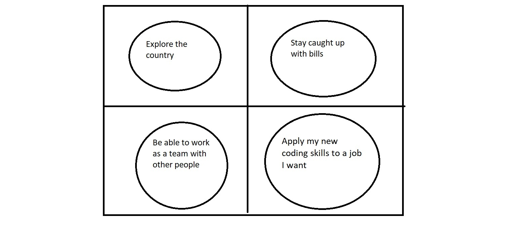

Last Updated December 3rd 2018
Career Buddy: Feliz Munoz
Networking was an experience that showed me how opportunities come about. First off, I would like to say how much I enjoyed hearing the presentations from businesses that we're invited by One Million Cups. I saw firsthand, how people present their business and what it take to have one. The Care-IT business caught my attention as they were trying to be, as a gentleman from the audience described it as, the "McDonald's of the health industry." They had a goal to basically kill the waiting game of meeting with a doctor. I felt that was a neat idea that could possibly expand as time proceeds. After the presentations, we started the networking part of the event. This was the first time where I had initiate the conversation with a person and basically sell myself and what I will be doing as career in the near future. The gentleman I spoke with was named Anthony. With such a coincidence to have the same first name, it was much easier to engage into the conversation. The conversation itself was enjoyable. The only thing that I do struggle with is the concept of "impostor syndrome." It was really hard talking about things that I haven't necessarily picked up on, but with a disadvantage came the advantage, as I was able to talk with Anthony about how I'm always "hungry" for knowledge. For example, he mentioned that he is starting a business in making things with 3D Printing. I caught his attention by saying that I would love learn more about 3D printing. I was able to write down my information for him, just in case an opportunity arises from our conversation.
I was fortunate enough to have somebody I know who took the bootcamp 2 cohorts from when I'd be taking. I've known Carlos Marquez since we were kindergarten. Since then, we had been the best of friends. I always took what he thought into considerations. In fact, he was the reason why I wanted to start my career of coding. The number one thing he had told me was to know what I am learning. From interviews he had after the bootcamp, he said employers always like to see potential employees know what they're taking about and how they answer a question related to coding. After hearing other past alumni come by and share their experience, it seems that being able to speak on what you know is a common trend in building confidence.
4 initiatives I would like to cook up (from cookers perspective)
| Professional | Personal | |
|---|---|---|
| Identity | Anthony Garcia, Anthony Gabriel Garcia | Ant |
| Channels | Instagram Apple Music Twitter | |
| Content | Professional, Web Developer,Business | Relaxed, Open, Interests, Leisurely |
40% Tactile
30% Auditory
30% Visual
Making music has always been something I’ve enjoyed. I enjoy listening to music, but sometimes when I’m listening to music, I have thoughts of how I would have done something different. For example, maybe with a hip-hop song, I would think to myself that I would have used a different kick drum or different snare. Sometimes I listen to the mix of a song and tell myself that that an instrument is too loud or even to low in the song. I eventually got introduced to the world of producing. Starting out in college, I had enough money saved to buy my equipment to pursue producing. Since then, I have enjoyed all the ways and sounds I can make. I can choose any direction I want to take a song. It’s the thrill of trying to get to my final product I enjoy the most. I think of it as like constructing a brand-new skyscraper. Layer by layer, piece by piece, I see my project getting bigger and my idea coming more to life. Granted, there are the people who will think differently of what I create, but in the end, as long as I’m satisfied with my product, I’m happy.

Triggers: being talked at, micro-communication, when people try and take over, being indirect
Forbidden Island is a TEAM game. I have been a introvert all my life and playing games that involved a team effort threw me off my ways but in a good way. As we played, my team discussed and strategized ways to stay afloat, and make sure we make it off the "island." Even though it was a game, you felt some sort of validity, where your voice mattered, and it was nice to just play a fun game and forget coding for a bit. Overall, it was a pleasant time.
Hello my name is Anthony. I make websites that will help local businesses and help strengthen the economy here back in Albuquerque. I'm doing this by applying software languages at a professional level that I learned from Deep Dive Coding's Fullstack Bootcamp through CNM Ingenuity. How can you help our economy here in Albuquerque?

The black and white window shows how my life is right now, black and white, with not much color in my life. The window also represents myself reflecting on my life and trying to look out for opportunities I can take to make my life better. The picture of the giraffe represents 3 years from now, looking over the horizon, as I am able to do what I want with my career. I stand tall to challenges and I see what is ahead of me, which makes me more excited.
The first week of the bootcamp has been challenging to say the least. When I say challenging, I don't mean in terms of difficulty but more of a life style change. Before the class, I was trying my best to balance my job and school, so just to have the opportunity to focus on just school is a blessing. As each day was passing I realized that the material we learn is something that must be practiced everyday. Practice looks like one of the main keys to passing this bootcamp. I'm sure i'll find other ways of passing. I really can't wait for what's to come and how good I get at coding.
Boundaries were pushed this week. Entering the second week of the bootcamp, I'm finally understanding a few things: 1. All the concepts and material we learn eventually comes together, and works as a collective. 2. Practice and repetition of everything we learn will soon stick with us and will eventually become second hand knowledge, even if we don't think so. 3. Time management is one way to passing. I see how little time I have to be wasting. Each week I need to remind myself to eat,breathe, sleep coding. Repeat.
Week 3 was finally started my path to piecing together what I have learned so far in the bootcamp. As I sat through lectures, learned ne material, I see that once you learn one thing, it allows to learn something else. Take it back to week 1 when we were dealing with html for a bit, week 3 shows us that CSS is a language that can amplify the layout of html. As the week go on, we learn more languages. These languages will eventually make a full circle and show us that instead learning material after material, were building a toolset in which we refer in a back and forth manner, even in our days as senior developers.
This week was just an overall bummer. For the majority of the week, I was sick and didn't want to do much of anything. But with every week here, is another lesson learned. That lesson being that road blocks are always going to be in our paths, but what has to be done must get done one way or another. If I applied this week to my career, my boss would expect my work by the due date assigned. I had to get the work done, but now I know I have to stay on top of my health in the weeks to come.
With more weeks, comes more responsibilities. Time management seemed to be the common theme with my cohort. We are in the part of the bootcamp where time is valuable. Every last second counts. When a day ends, its a time to reflect and ask ourselves: was our day productive enough? Most of the time the answer is now. With capstone to our person websites, to lectures and other languages we still have to learn, it seems like there is no time in the world. I also know that it is not a time to complain. Everything that we do in this bootcamp has to get done if we want to start our careers. This is only the beginning, and with hard work and dedication, it'll be well worth it.
Time has passed by quickly. I look back from my first entry and I realize how much I've learned and how much I still need to learn. Either way I'm happy with the progress I'm making and I'll be happy with my future progress. With that being said, I have plenty to do but such little time to do everything. Time management will be key for the next three weeks. This is where things will pick up at a pace I'm probably not ready for, but like most human beings, we like a nice challenge. I definitely wil need to work on my interview skills as we have interview day coming up and just stay in good communication with my capstone team, trying to get everything we need all together to finish out our capstone project. It'll be tough, but doable.
The seventh week of the bootcamp was testing everything that I had learned so far. I was applying what I knew whether it be soft skills or hard skills, it was all coming together to allow myself to finish my Personal Website Project. The thing that I think I struggled with was CSS, and trying to implement it with Bootstrap. As the week progressed, I saw that they were working as a unit but I still had some hiccups here and there. The only way to really apply what I'm learning is to practice, practice, practice, practice till my fingers hurt. I'm really happy at the fact that I am enjoying it though.
Two words to describe this week? JAM PACKED! This week was the time to really show me what it could be like in the job field as a web developer. In the class schedule this week, we had due dates, the start of our security unit and interview day. Interview day consisted of an actual employer from a actual company to come and interview us, as if we are actually trying to get a job. Later that day, came a technical interview in which they called it a "whiteboard session." If I read these entries after the bootcamp, I hope that I read this entry: 1)Know your material. It really shows the person conducting the interview that you know exactly what you're talking about. 2)Keep things short and to the point. myself and the people giving the interviews both address the fact that I don't need useless fillers when discussing what I know and when answering questions. With studying, I'll know how to get to any solution or answer any question with less words and with a precise response. Lastly 3)HYGIENE. Keep my my hair short and invest in some "interview clothes." It'll go a long way for yourself.